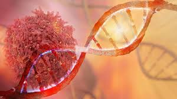
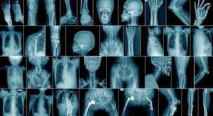
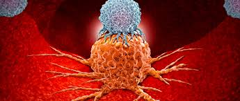
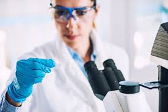
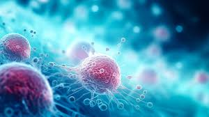

Introdução ao Câncer
O câncer é um conjunto de mais de 100 doenças relacionadas. Ele pode começar em qualquer parte do corpo quando células anormais crescem descontroladamente. Essas células podem invadir tecidos circundantes e se espalhar para outras partes do corpo por meio do sangue e do sistema linfático, em um processo conhecido como metástase.
Causas do Câncer
Fatores Genéticos
Algumas pessoas nascem com certas mutações genéticas que podem predispor ao câncer. Exemplos incluem mutações nos genes BRCA1 e BRCA2, que aumentam o risco de câncer de mama e ovário. Estudos de genômica estão constantemente revelando novas associações genéticas e oportunidades para terapias personalizadas.
Fatores Ambientais
A exposição a substâncias como amianto, radônio e produtos químicos industriais pode aumentar o risco de câncer. A radiação ultravioleta do sol é uma das principais causas de câncer de pele.
Além disso, a poluição do ar e a exposição a certos produtos químicos no ambiente de trabalho são fatores significativos.
Estilo de Vida
Tabagismo: É o principal fator de risco para câncer de pulmão, boca, garganta, esôfago e outros. Fumar cigarro eletrónico e narguilé também são prejudiciais.
Alcoolismo: Pode aumentar o risco de câncer de fígado, boca, garganta e esôfago.
Dieta e Peso: Dieta pobre e obesidade estão associadas a maior risco de câncer de cólon, mama, pâncreas e outros. A ingestão de alimentos processados e ricos em gordura pode aumentar esses riscos.

Tipos de Câncer
Carcinomas
Esses cânceres começam na pele ou nos tecidos que revestem órgãos internos. Exemplos incluem carcinoma de células basais e carcinoma de células escamosas.
Sarcomas
Cânceres que se originam nos tecidos conjuntivos, como ossos, cartilagens, gordura e músculos.
Leucemias
Cânceres que começam no tecido formador de sangue, como a medula óssea, e resultam em grandes quantidades de células sanguíneas anormais.
Linfomas
Cânceres que começam nas células do sistema imunológico. Os dois tipos principais são linfoma de Hodgkin e linfoma não-Hodgkin.
Sintomas
Os sintomas variam amplamente dependendo do tipo e do estágio do câncer, mas podem incluir:
- Perda de Peso Inexplicada
- Febre
- Fadiga
- Dor
- Alterações na Pele: Como escurecimento, amarelecimento, vermelhidão, feridas que não cicatrizam ou alterações nos moles.
- Mudanças nos Hábitos Intestinais ou na Função da Bexiga
- Sangramento ou Secreção Incomum
Diagnóstico:
Raio-X
Usado para detectar anomalias.
Tomografia Computadorizada (TC)
Produz imagens detalhadas do interior do corpo.
Ressonância Magnética (RM)
Usa campos magnéticos para criar imagens detalhadas.
Ultrassonografia
Utiliza ondas sonoras para visualizar órgãos e estruturas dentro do corpo.
Biópsia
Remoção de uma pequena amostra de tecido para exame microscópico. É a maneira mais definitiva de diagnosticar o câncer.
Testes de Sangue
Podem ajudar a detectar marcadores tumorais específicos ou verificar a função de órgãos afetados. Exemplos incluem o antígeno prostático específico (PSA) para câncer de próstata e o CA-125 para câncer de ovário.

Tratamentos
Cirurgia
A remoção cirúrgica do tumor é muitas vezes a primeira opção de tratamento. Pode ser combinada com outros tratamentos para garantir que todas as células cancerígenas sejam eliminadas.
Radioterapia
Usa radiação de alta energia para matar células cancerígenas. Pode ser utilizada antes da cirurgia para reduzir o tamanho do tumor ou depois para eliminar células residuais.
Quimioterapia
Usa medicamentos para destruir células cancerígenas ou impedir seu crescimento. Pode ser administrada oralmente, por injeção ou via intravenosa.
Imunoterapia
Estimula o sistema imunológico para atacar células cancerígenas. Terapias como inibidores de checkpoint e vacinas contra o câncer estão mostrando resultados promissores.
Terapia Alvo
Ataca especificamente as células cancerígenas sem danificar as células normais. Medicamentos como inibidores de tirosina-quinase e anticorpos monoclonais são usados com sucesso em vários tipos de câncer.
Terapia Hormonal
Bloqueia hormônios que certos tipos de câncer precisam para crescer. É comum no tratamento de câncer de mama e próstata.

Pesquisa e Inovações
A pesquisa sobre o câncer está em constante evolução, com avanços significativos sendo feitos em áreas como:
Genômica e Medicina Personalizada: Personalização do tratamento com base no perfil genético do tumor. Estudos estão focados em identificar mutações específicas que podem ser alvo de novas terapias.
Terapias Imunológicas: Incluindo terapias de células T com receptor de antígeno quimérico (CAR-T). Esses tratamentos estão revolucionando a forma como certos tipos de câncer são abordados.
Detecção Precoce: Melhorias contínuas nas tecnologias de imagem e biomarcadores. Novos métodos estão sendo desenvolvidos para identificar cânceres em estágios muito iniciais.

Prevenção
Estilo de Vida Saudável
Dieta Balanceada e Exercício: Reduzir o consumo de alimentos processados e aumentar a atividade física. Uma dieta rica em frutas, vegetais e grãos integrais pode diminuir o risco de câncer.
Evitar Tabaco e Álcool: Reduzir ou eliminar o uso de tabaco e o consumo de álcool.
Vacinação
HPV: Vacinação contra o papilomavírus humano pode prevenir vários tipos de câncer, incluindo cervical.
Hepatite B: A vacina pode prevenir o câncer de fígado.
A vacinação tem se mostrado uma ferramenta promissora na prevenção e tratamento do câncer. Vacinas como a do papilomavírus humano (HPV) ajudam a prevenir cânceres relacionados ao vírus, como o câncer cervical. Da mesma forma, a vacina contra hepatite B pode prevenir câncer de fígado. Em termos de tratamento,
vacinas terapêuticas contra o câncer estão sendo desenvolvidas para estimular o sistema imunológico a atacar células cancerígenas específicas.
Rastreamento
Mamografias: Detecção precoce de câncer de mama.
Colonoscopias: Detecção precoce de câncer de cólon.
Exames de PSA: Detecção precoce de câncer de próstata.
Papanicolau: Teste para detectar câncer cervical e lesões pré-cancerígenas.

Conclusão
O câncer é uma doença complexa, mas com a pesquisa contínua, há esperança de diagnósticos mais precoces e tratamentos mais eficazes no futuro.
A colaboração entre cientistas, médicos e pacientes é crucial para continuar avançando na luta contra essa doença.